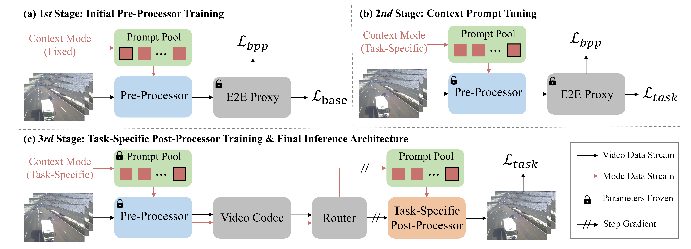
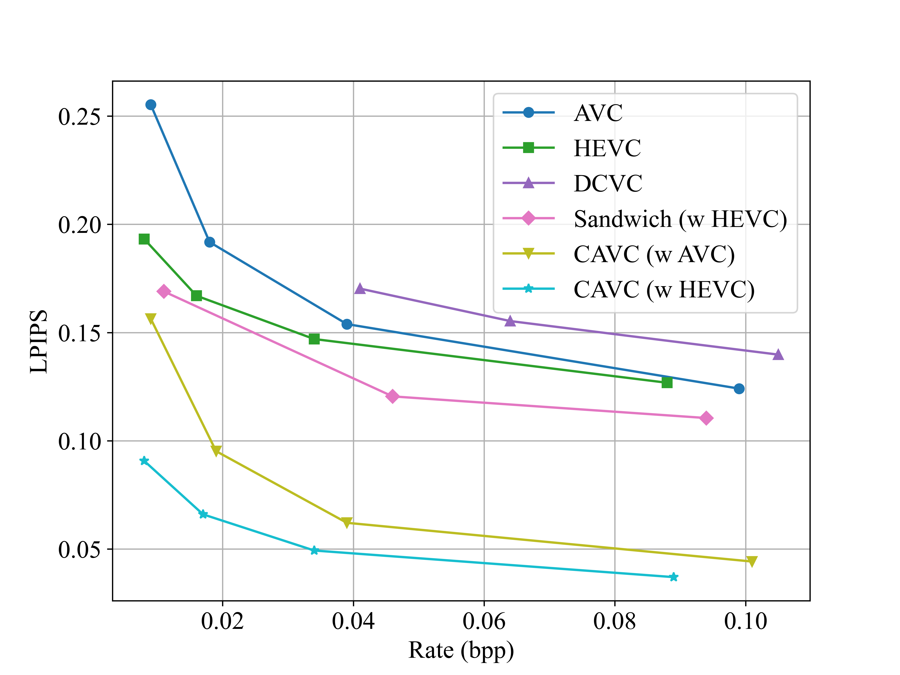
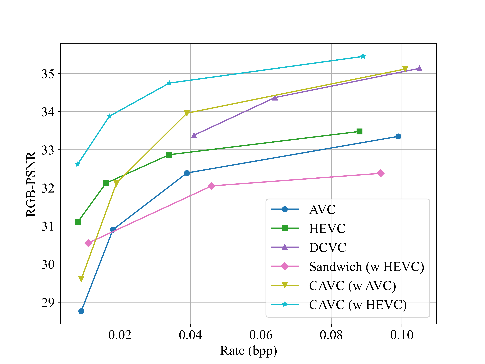
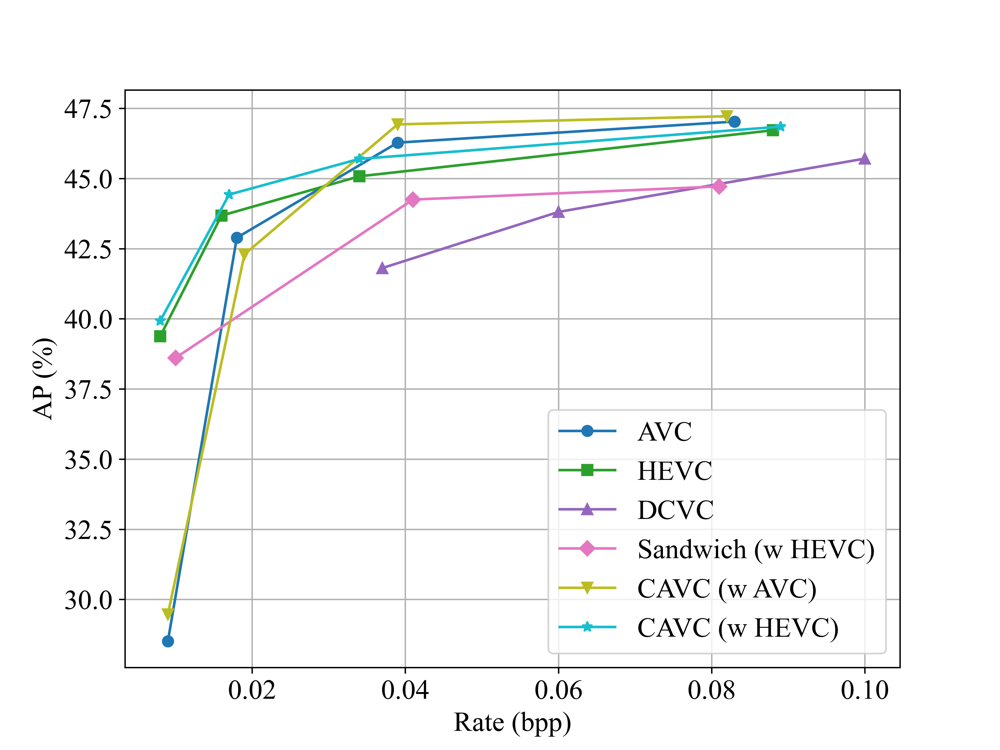

Abstract
The growing demand for video data to simultaneously serve human and machine visual analysis brings significant challenges to compression design. Traditional codecs are primarily tailored for pixel-level reconstruction, offering high compression efficiency but limited adaptability to diverse downstream tasks. With the emergence of end-to-end learned compression, it becomes possible to tailor representations for different purposes. However, such methods usually suffer from high complexity and incompatibility with existing compression standards, which limits their deployment. To address these issues and meet the requirements of diverse application scenarios, we propose for the first time a Context-Aware dynamic neural adapter for enhanced Video Compression (CAVC) that incorporates a context mode injection mechanism, allowing a single model to dynamically adjust to different compression requirements via numerical context modes. This method adds only a small number of learnable parameters to enable diverse adaptation, while maintaining compatibility with standard codecs. Experimental results on UVG and TUMTraf datasets demonstrate that our approach enhances compression performance for visual perception, pixel-level reconstruction, and machine recognition.

Fig. 1. Overall architecture of Context-Aware dynamic neural adapter for enhanced Video Compression (CAVC) and the proposed progressive training strategy.

Fig. 2. LPIPS rate-distortion performance results on the UVG dataset. CAVC significantly improves the performance of standard codecs.

Fig. 3. PSNR rate-distortion performance results on the UVG dataset.

Fig. 4. Detection AP results on the TUMTraf dataset. CAVC dynamically bridges the gap for machine vision tasks.

Fig. 5. Visual comparisons on CityAlley in UVG. CAVC achieves superior LPIPS and PSNR metrics at lower bitrates compared to using HEVC alone.
BibTeX
@inproceedings{sun2026enhanced,
title={Enhanced Video Compression with Context-Aware Dynamic Neural Adapter},
author={Sun, Shaofan and Ma, Shuangming and Chen, Han and Duan, Ling-Yu and Liu, Jiaying},
booktitle={ICASSP 2026 - 2026 IEEE International Conference on Acoustics, Speech and Signal Processing (ICASSP)},
year={2026}
}